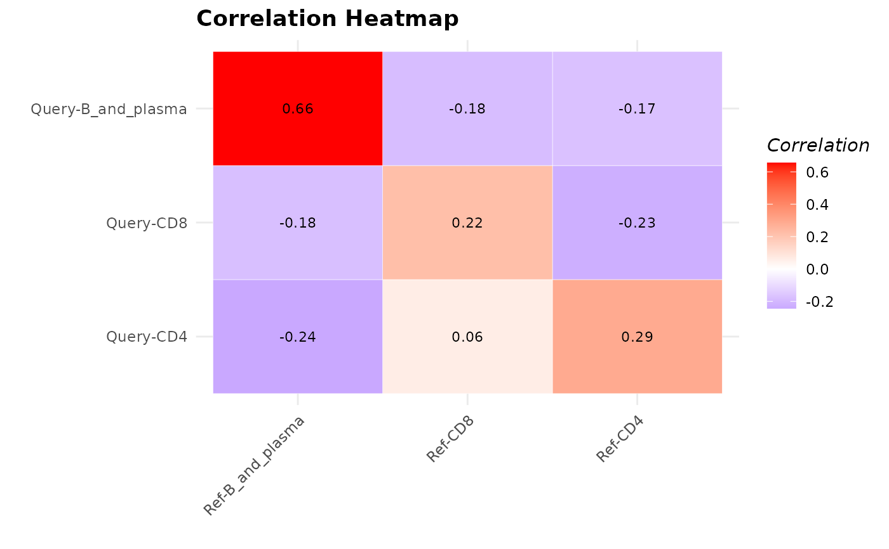

Compute Average Pairwise Correlation between Cell Types
Source:R/calculateAveragePairwiseCorrelation.R, R/plot.calculateAveragePairwiseCorrelationObject.R
calculateAveragePairwiseCorrelation.RdComputes the average pairwise correlations between specified cell types in single-cell gene expression data.
The S3 plot method takes the output of the `calculateAveragePairwiseCorrelation` function, which should be a matrix of pairwise correlations, and plots it as a heatmap.
Usage
calculateAveragePairwiseCorrelation(
query_data,
reference_data,
query_cell_type_col,
ref_cell_type_col,
cell_types = NULL,
pc_subset = 1:10,
correlation_method = c("spearman", "pearson"),
assay_name = "logcounts",
max_cells_query = 5000,
max_cells_ref = 5000
)
# S3 method for class 'calculateAveragePairwiseCorrelationObject'
plot(x, ...)Arguments
- query_data
A
SingleCellExperimentobject containing numeric expression matrix for the query cells.- reference_data
A
SingleCellExperimentobject containing numeric expression matrix for the reference cells.- query_cell_type_col
The column name in the
colDataofquery_datathat identifies the cell types.- ref_cell_type_col
The column name in the
colDataofreference_datathat identifies the cell types.- cell_types
A character vector specifying the cell types to include in the plot. If NULL, all cell types are included.
- pc_subset
A numeric vector specifying which principal components to use in the analysis. Default is 1:10. If set to
NULLthen no dimensionality reduction is performed and the assay data is used directly for computations.- correlation_method
The correlation method to use for calculating pairwise correlations.
- assay_name
Name of the assay on which to perform computations. Default is "logcounts".
- max_cells_query
Maximum number of query cells to retain after cell type filtering. If NULL, no downsampling of query cells is performed. Default is 5000
- max_cells_ref
Maximum number of reference cells to retain after cell type filtering. If NULL, no downsampling of reference cells is performed. Default is 5000
- x
Output matrix from `calculateAveragePairwiseCorrelation` function.
- ...
Additional arguments to be passed to the plotting function.
Value
A matrix containing the average pairwise correlation values. Rows and columns are labeled with the cell types. Each element in the matrix represents the average correlation between a pair of cell types.
The S3 plot method returns a ggplot object representing the heatmap plot.
Details
This function operates on SingleCellExperiment objects,
ideal for single-cell analysis workflows. It calculates pairwise correlations between query and
reference cells using a specified correlation method, then averages these correlations for each
cell type pair. This function aids in assessing the similarity between cells in reference and query datasets,
providing insights into the reliability of cell type annotations in single-cell gene expression data.
The S3 plot method converts the correlation matrix into a dataframe, creates a heatmap using ggplot2, and customizes the appearance of the heatmap with updated colors and improved aesthetics.
Author
Anthony Christidis, anthony-alexander_christidis@hms.harvard.edu
Examples
# Load data
data("reference_data")
data("query_data")
# Compute pairwise correlations
cor_matrix_avg <- calculateAveragePairwiseCorrelation(query_data = query_data,
reference_data = reference_data,
query_cell_type_col = "SingleR_annotation",
ref_cell_type_col = "expert_annotation",
cell_types = c("CD4", "CD8", "B_and_plasma"),
pc_subset = 1:10,
correlation_method = "spearman")
# Visualize correlation output
plot(cor_matrix_avg)
